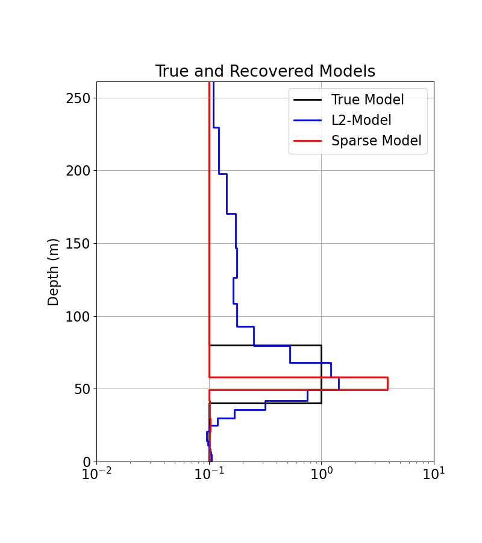
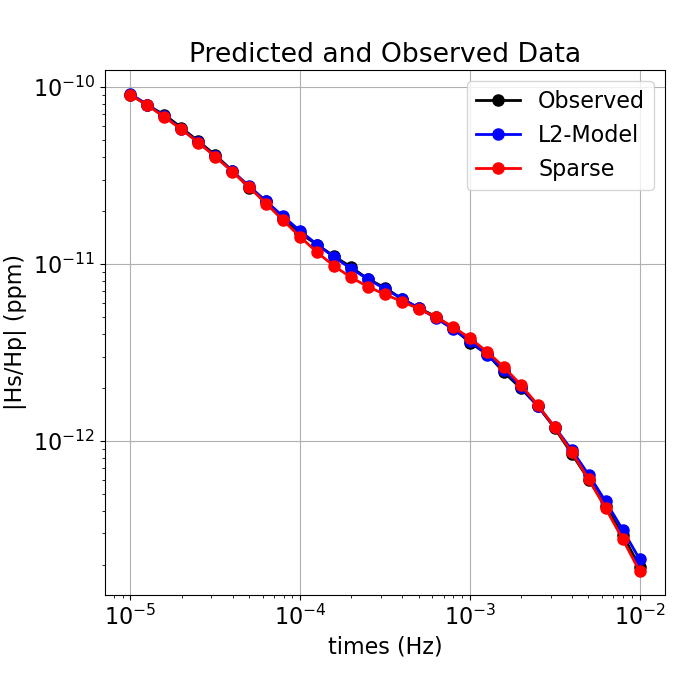

Note
Go to the end to download the full example code.
1D Inversion of Time-Domain Data for a Single Sounding#
Here we use the module SimPEG.electromangetics.time_domain_1d to invert time domain data and recover a 1D electrical conductivity model. In this tutorial, we focus on the following:
How to define sources and receivers from a survey file
How to define the survey
Sparse 1D inversion of with iteratively re-weighted least-squares
For this tutorial, we will invert 1D time domain data for a single sounding. The end product is layered Earth model which explains the data. The survey consisted of a horizontal loop with a radius of 6 m, located 20 m above the surface. The receiver measured the vertical component of the magnetic flux at the loop’s centre.
Import modules#
import os
import tarfile
import numpy as np
import matplotlib.pyplot as plt
from discretize import TensorMesh
import SimPEG.electromagnetics.time_domain as tdem
from SimPEG.utils import mkvc, plot_1d_layer_model
from SimPEG import (
maps,
data,
data_misfit,
inverse_problem,
regularization,
optimization,
directives,
inversion,
utils,
)
plt.rcParams.update({"font.size": 16, "lines.linewidth": 2, "lines.markersize": 8})
# sphinx_gallery_thumbnail_number = 2
Download Test Data File#
Here we provide the file path to the data we plan on inverting. The path to the data file is stored as a tar-file on our google cloud bucket: “https://storage.googleapis.com/simpeg/doc-assets/em1dtm.tar.gz”
# storage bucket where we have the data
data_source = "https://storage.googleapis.com/simpeg/doc-assets/em1dtm.tar.gz"
# download the data
downloaded_data = utils.download(data_source, overwrite=True)
# unzip the tarfile
tar = tarfile.open(downloaded_data, "r")
tar.extractall()
tar.close()
# path to the directory containing our data
dir_path = downloaded_data.split(".")[0] + os.path.sep
# files to work with
data_filename = dir_path + "em1dtm_data.txt"
Downloading https://storage.googleapis.com/simpeg/doc-assets/em1dtm.tar.gz
saved to: /home/ssoler/simpeg/tutorials/08-tdem/em1dtm.tar.gz
Download completed!
Load Data and Plot#
Here we load and plot the 1D sounding data. In this case, we have the B-field response to a step-off waveform.
# Load field data
dobs = np.loadtxt(str(data_filename), skiprows=1)
times = dobs[:, 0]
dobs = mkvc(dobs[:, -1])
fig = plt.figure(figsize=(7, 7))
ax = fig.add_axes([0.15, 0.15, 0.8, 0.75])
ax.loglog(times, np.abs(dobs), "k-o", lw=3)
ax.set_xlabel("Times (s)")
ax.set_ylabel("|B| (T)")
ax.set_title("Observed Data")
Text(0.5, 1.0, 'Observed Data')
Defining the Survey#
Here we demonstrate a general way to define the receivers, sources, waveforms and survey. For this tutorial, we define a single horizontal loop source as well a receiver which measures the vertical component of the magnetic flux.
# Source loop geometry
source_location = np.array([0.0, 0.0, 20.0])
source_orientation = "z" # "x", "y" or "z"
source_current = 1.0 # peak current amplitude
source_radius = 6.0 # loop radius
# Receiver geometry
receiver_location = np.array([0.0, 0.0, 20.0])
receiver_orientation = "z" # "x", "y" or "z"
# Receiver list
receiver_list = []
receiver_list.append(
tdem.receivers.PointMagneticFluxDensity(
receiver_location, times, orientation=receiver_orientation
)
)
# Define the source waveform.
waveform = tdem.sources.StepOffWaveform()
# Sources
source_list = [
tdem.sources.CircularLoop(
receiver_list=receiver_list,
location=source_location,
waveform=waveform,
current=source_current,
radius=source_radius,
)
]
# Survey
survey = tdem.Survey(source_list)
Assign Uncertainties and Define the Data Object#
Here is where we define the data that are inverted. The data are defined by the survey, the observation values and the uncertainties.
# 5% of the absolute value
uncertainties = 0.05 * np.abs(dobs) * np.ones(np.shape(dobs))
# Define the data object
data_object = data.Data(survey, dobs=dobs, standard_deviation=uncertainties)
Defining a 1D Layered Earth (1D Tensor Mesh)#
Here, we define the layer thicknesses for our 1D simulation. To do this, we use the TensorMesh class.
# Layer thicknesses
inv_thicknesses = np.logspace(0, 1.5, 25)
# Define a mesh for plotting and regularization.
mesh = TensorMesh([(np.r_[inv_thicknesses, inv_thicknesses[-1]])], "0")
Define a Starting and Reference Model#
Here, we create starting and/or reference models for the inversion as well as the mapping from the model space to the active cells. Starting and reference models can be a constant background value or contain a-priori structures. Here, the starting model is log(0.1) S/m.
Define log-conductivity values for each layer since our model is the log-conductivity. Don’t make the values 0! Otherwise the gradient for the 1st iteration is zero and the inversion will not converge.
# Define model. A resistivity (Ohm meters) or conductivity (S/m) for each layer.
starting_model = np.log(0.1 * np.ones(mesh.nC))
# Define mapping from model to active cells.
model_mapping = maps.ExpMap()
Define the Physics using a Simulation Object#
simulation = tdem.Simulation1DLayered(
survey=survey, thicknesses=inv_thicknesses, sigmaMap=model_mapping
)
Define Inverse Problem#
The inverse problem is defined by 3 things:
Data Misfit: a measure of how well our recovered model explains the field data
Regularization: constraints placed on the recovered model and a priori information
Optimization: the numerical approach used to solve the inverse problem
# Define the data misfit. Here the data misfit is the L2 norm of the weighted
# residual between the observed data and the data predicted for a given model.
# The weighting is defined by the reciprocal of the uncertainties.
dmis = data_misfit.L2DataMisfit(simulation=simulation, data=data_object)
dmis.W = 1.0 / uncertainties
# Define the regularization (model objective function)
reg_map = maps.IdentityMap(nP=mesh.nC)
reg = regularization.Sparse(mesh, mapping=reg_map, alpha_s=0.01, alpha_x=1.0)
# set reference model
reg.reference_model = starting_model
# Define sparse and blocky norms p, q
reg.norms = [1, 0]
# Define how the optimization problem is solved. Here we will use an inexact
# Gauss-Newton approach that employs the conjugate gradient solver.
opt = optimization.ProjectedGNCG(maxIter=100, maxIterLS=20, maxIterCG=30, tolCG=1e-3)
# Define the inverse problem
inv_prob = inverse_problem.BaseInvProblem(dmis, reg, opt)
Define Inversion Directives#
Here we define any directiveas that are carried out during the inversion. This includes the cooling schedule for the trade-off parameter (beta), stopping criteria for the inversion and saving inversion results at each iteration.
# Defining a starting value for the trade-off parameter (beta) between the data
# misfit and the regularization.
starting_beta = directives.BetaEstimate_ByEig(beta0_ratio=1e1)
# Update the preconditionner
update_Jacobi = directives.UpdatePreconditioner()
# Options for outputting recovered models and predicted data for each beta.
save_iteration = directives.SaveOutputEveryIteration(save_txt=False)
# Directives for the IRLS
update_IRLS = directives.Update_IRLS(
max_irls_iterations=30, minGNiter=1, coolEpsFact=1.5, update_beta=True
)
# Updating the preconditionner if it is model dependent.
update_jacobi = directives.UpdatePreconditioner()
# Add sensitivity weights
sensitivity_weights = directives.UpdateSensitivityWeights()
# The directives are defined as a list.
directives_list = [
sensitivity_weights,
starting_beta,
save_iteration,
update_IRLS,
update_jacobi,
]
Running the Inversion#
To define the inversion object, we need to define the inversion problem and the set of directives. We can then run the inversion.
# Here we combine the inverse problem and the set of directives
inv = inversion.BaseInversion(inv_prob, directives_list)
# Run the inversion
recovered_model = inv.run(starting_model)
SimPEG.InvProblem is setting bfgsH0 to the inverse of the eval2Deriv.
***Done using same Solver, and solver_opts as the Simulation1DLayered problem***
model has any nan: 0
=============================== Projected GNCG ===============================
# beta phi_d phi_m f |proj(x-g)-x| LS Comment
-----------------------------------------------------------------------------
x0 has any nan: 0
0 1.12e+03 4.01e+03 0.00e+00 4.01e+03 8.04e+02 0
1 5.62e+02 1.13e+03 1.28e-01 1.20e+03 1.01e+03 1
2 2.81e+02 6.45e+02 1.34e-01 6.82e+02 1.17e+03 1
3 1.40e+02 4.06e+02 1.45e-01 4.26e+02 1.66e+03 0 Skip BFGS
Reached starting chifact with l2-norm regularization: Start IRLS steps...
irls_threshold 2.6549781411302487
4 7.02e+01 1.34e+01 1.22e-01 2.20e+01 2.03e+02 0 Skip BFGS
5 3.89e+02 3.41e+00 1.24e-01 5.17e+01 8.61e+01 0 Skip BFGS
6 1.66e+03 4.76e+00 1.29e-01 2.19e+02 1.73e+02 0 Skip BFGS
7 4.46e+03 9.16e+00 1.32e-01 5.99e+02 3.24e+02 0
8 7.15e+03 2.57e+01 1.35e-01 9.89e+02 3.68e+02 0
9 4.53e+03 6.00e+01 1.46e-01 7.21e+02 6.83e+01 0
10 2.74e+03 6.76e+01 1.56e-01 4.95e+02 8.36e+01 0 Skip BFGS
11 1.69e+03 6.41e+01 1.55e-01 3.27e+02 8.30e+01 0 Skip BFGS
12 1.18e+03 4.81e+01 1.44e-01 2.18e+02 5.91e+01 0
13 8.79e+02 4.17e+01 1.40e-01 1.65e+02 3.15e+02 0
14 6.61e+02 4.10e+01 1.30e-01 1.27e+02 3.97e+02 0
15 5.09e+02 3.93e+01 1.18e-01 9.91e+01 3.82e+02 0 Skip BFGS
16 4.09e+02 3.60e+01 1.04e-01 7.88e+01 2.63e+02 0 Skip BFGS
17 4.09e+02 3.37e+01 9.27e-02 7.16e+01 8.16e+01 0 Skip BFGS
18 3.39e+02 3.43e+01 8.32e-02 6.25e+01 1.30e+01 0 Skip BFGS
19 2.80e+02 3.43e+01 7.80e-02 5.61e+01 1.66e+01 0 Skip BFGS
20 2.80e+02 3.36e+01 7.59e-02 5.49e+01 1.26e+01 0
21 2.80e+02 3.32e+01 7.44e-02 5.41e+01 1.21e+01 0 Skip BFGS
22 2.80e+02 3.30e+01 7.33e-02 5.35e+01 1.24e+01 0
23 2.80e+02 3.28e+01 7.25e-02 5.31e+01 1.19e+01 0 Skip BFGS
24 2.80e+02 3.27e+01 7.20e-02 5.29e+01 1.09e+01 0 Skip BFGS
Minimum decrease in regularization.End of IRLS
------------------------- STOP! -------------------------
1 : |fc-fOld| = 0.0000e+00 <= tolF*(1+|f0|) = 4.0084e+02
1 : |xc-x_last| = 2.0393e-03 <= tolX*(1+|x0|) = 1.2741e+00
0 : |proj(x-g)-x| = 1.0927e+01 <= tolG = 1.0000e-01
0 : |proj(x-g)-x| = 1.0927e+01 <= 1e3*eps = 1.0000e-02
0 : maxIter = 100 <= iter = 25
------------------------- DONE! -------------------------
Plotting Results#
# Load the true model and layer thicknesses
true_model = np.array([0.1, 1.0, 0.1])
true_layers = np.r_[40.0, 40.0, 160.0]
# Extract Least-Squares model
l2_model = inv_prob.l2model
print(np.shape(l2_model))
# Plot true model and recovered model
fig = plt.figure(figsize=(8, 9))
x_min = np.min(
np.r_[model_mapping * recovered_model, model_mapping * l2_model, true_model]
)
x_max = np.max(
np.r_[model_mapping * recovered_model, model_mapping * l2_model, true_model]
)
ax1 = fig.add_axes([0.2, 0.15, 0.7, 0.7])
plot_1d_layer_model(true_layers, true_model, ax=ax1, show_layers=False, color="k")
plot_1d_layer_model(
mesh.h[0], model_mapping * l2_model, ax=ax1, show_layers=False, color="b"
)
plot_1d_layer_model(
mesh.h[0], model_mapping * recovered_model, ax=ax1, show_layers=False, color="r"
)
ax1.set_xlim(0.01, 10)
ax1.grid()
ax1.set_title("True and Recovered Models")
ax1.legend(["True Model", "L2-Model", "Sparse Model"])
plt.gca().invert_yaxis()
# Plot predicted and observed data
dpred_l2 = simulation.dpred(l2_model)
dpred_final = simulation.dpred(recovered_model)
fig = plt.figure(figsize=(7, 7))
ax1 = fig.add_axes([0.15, 0.15, 0.8, 0.75])
ax1.loglog(times, np.abs(dobs), "k-o")
ax1.loglog(times, np.abs(dpred_l2), "b-o")
ax1.loglog(times, np.abs(dpred_final), "r-o")
ax1.grid()
ax1.set_xlabel("times (Hz)")
ax1.set_ylabel("|Hs/Hp| (ppm)")
ax1.set_title("Predicted and Observed Data")
ax1.legend(["Observed", "L2-Model", "Sparse"], loc="upper right")
plt.show()
- 
- 
(26,)
Total running time of the script: (0 minutes 23.877 seconds)
Estimated memory usage: 8 MB